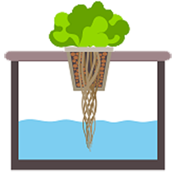
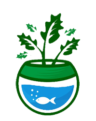

Vertikultur
Pola bercocok tanam yang menggunakan wadah tanam vertikal untuk mengatasi keterbatasan lahan. Tidak semua jenis tanaman bisa atau cocok untuk vertikultur. Untungnya, hampir semua jenis sayuran bisa digunakan.

Hidroponik
Metode bercocok tanam tanpa menggunakan media tanah, melainkan dengan menggunakan larutan mineral bernutrisi atau bahan lainnya yang mengandung unsur hara seperti sabut kelapa, serat mineral, pasir, pecahan batu bata, serbuk kayu, dan lain-lain sebagai pengganti media tanah.

Aquaponik
Kombinasi menarik antara Akuakultur dan Hidroponik yang mampu mendaur ulang nutrisi, dengan menggunakan sebagian kecil air daur ulang hingga memungkinkannya pertumbuhan ikan dan tanaman secara terpadu. Sistem ini sebenarnya sudah biasa dipakai para petani di Indonesia khususnya di Jawa.